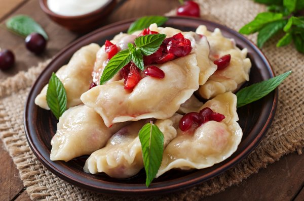

История возникновения
Что такое вареники, кто их придумал и где их родина? Мало кому известно, что появлением вареников на нашем столе мы обязаны... туркам! Отведав турецкую дюшвару, украинцы пришли в восторг и переиначили ее на свой лад, улучшив начинку и упростив рецепт приготовления теста.
Вареники отличаются от пельменей тем, что начинка в них всегда не сырая, а готовая. То есть при термической обработке вареников варится только тесто. Даже если готовят вареники с мясом, в начинку идет фарш из ранее сваренного или обжаренного мяса.
Итак, вареники пришли в Украину из Турции и стали у нас излюбленным блюдом. Как мы уже упоминали, в Турции это блюдо носило название дюш-вар, или дюш-вара. Украинцы стали называть его на свой лад — вараниками, а потом и варениками, увязав название со способом приготовления — отвариванием. Логично же — вареники варят. Значит, с названием все правильно.
Украинская кухня славится нежными, ароматными варениками с вишней, с сыром, с картошкой со сметаной. Их знают и любят все — от мала до велика.
Начинки
Начинкой вареников может быть вареное мясо, картофельное пюре с грибами или без них, тушеная или квашеная капуста, соленый или сладкий творог, брынза, ягоды — лесные или садовые. Особенно любимы в народе вареники с вишней. К сладким вареникам подают сметану, простоквашу, йогурт, масло, мед, варенье. К мясным, картофельным, грибным вареникам — сметану, жареный лук, майонез, чесночный соус.
Но наиболее ярые приверженцы украинской кухни, конечно, скажут, что истинные вареники должны быть сладкими и что надо экспериментировать с разнообразными ягодными и фруктовыми начинками. Вареники с вишней — настоящие знаменитости, но ничем не хуже вареники с лесными ягодами, черешней, яблоками, творогом.
Из несладких наполнителей наиболее распространены капуста, сельдь, картофель, грибы и, конечно, сало. Отдельной строкой следует сказать про ленивые вареники — они же творожные галушки, они же клецки. В них вообще не кладется никакой начинки.
Не мудрствуя лукаво, можно считать вареники традиционным, а быть может даже культовым блюдом украинской кухни. Их славно готовила еще гоголевская Солоха, а сейчас каждый по своему вкусу может выбрать как начинку вареников, так и тесто. Современный ассортимент вареников насчитывает 27 разновидностей.

Рецепт
Тесто для вареников делается из пшеничной муки, может быть пресным, дрожжевым, на кефире.
Оно раскатывается в тонкий слой, из которого нарезаются круглые, косоугольные или квадратные куски, и в них заворачивают начинку
(в качестве которой используют рубленое отварное мясо с жареным луком, тушёную капусту, варёный картофель, творог; или свежие ягоды: вишню, чернику, клубнику).
Далее края теста защипывают, кладут в кипящую воду (либо готовят на пару) и варят до тех пор, пока они не всплывут (и плюс ещё минуту-две, в зависимости от их
размеров).
Подача к столу
Подаются горячими со сметаной и/или сливочным маслом. Сладкие вареники (вишня, творог) часто посыпают сахаром или поливают мёдом. Вареники с мясом и с картофелем принято подавать с жареным луком и постным маслом.